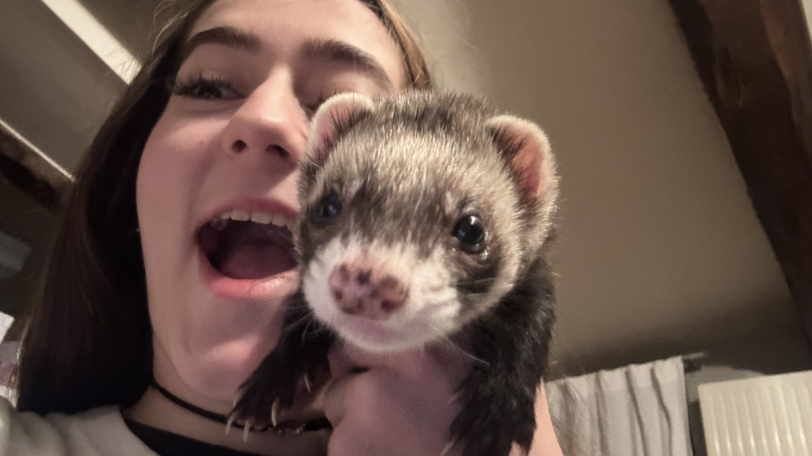
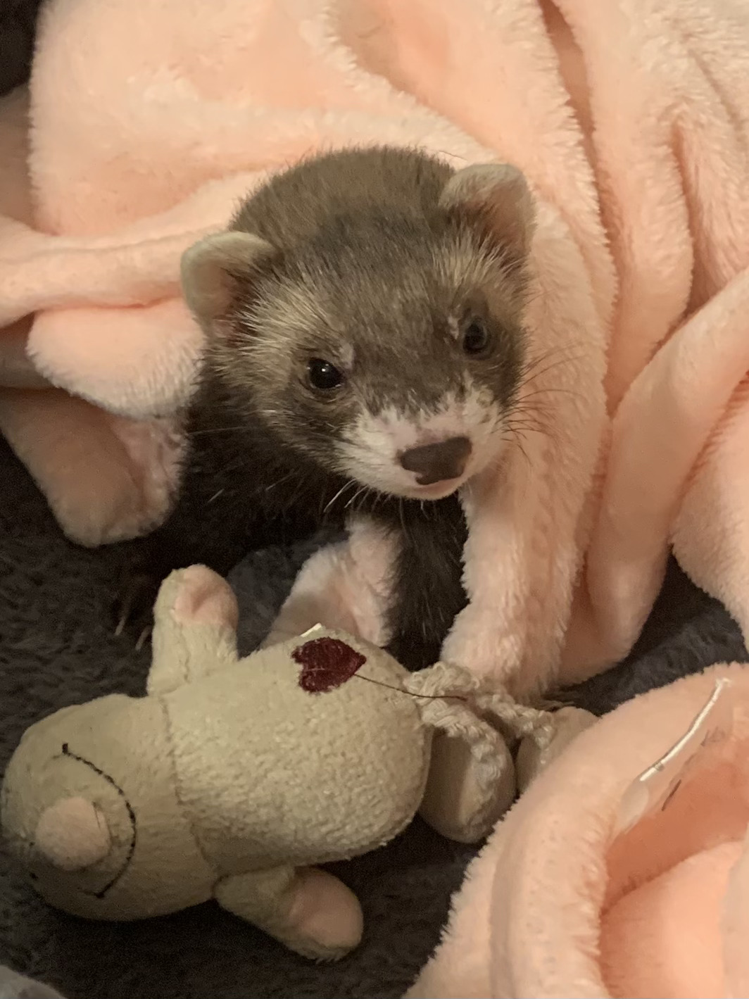
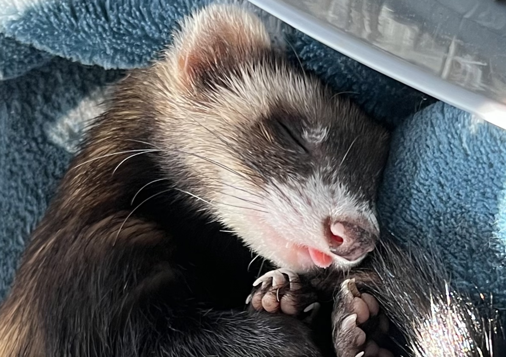
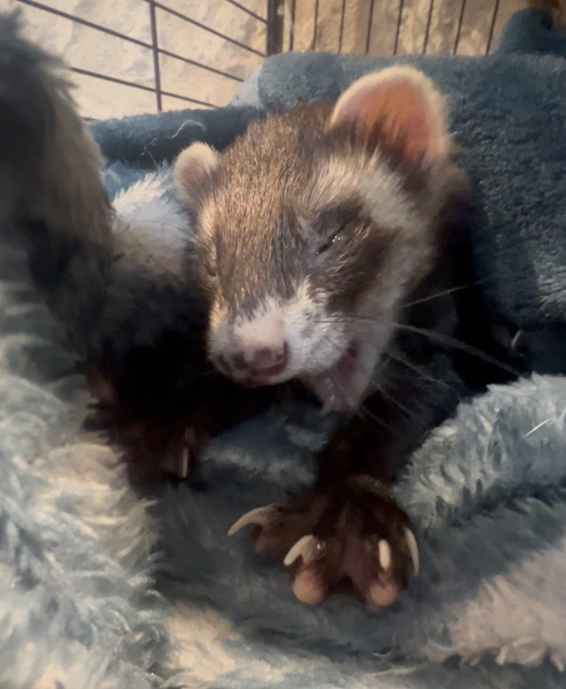
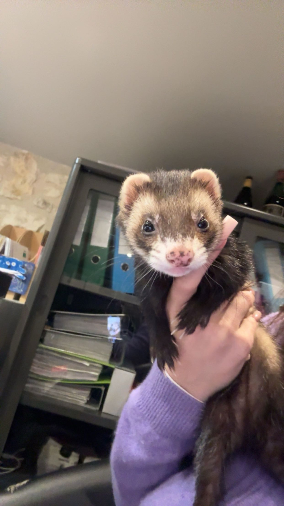

Daiquiri, alias Kiki Le Knacki est une petite furette de 6 ans, couleur zibeline pleine d'énergie, de curiosité et de malice.
Entre ses petites bêtises, ses moments de folie et ses siestes de 8h, Kiki transforme chaque journée en fou rire.
Attention ce n'est pas toujours drôle, Kiki jardine dans la maison, cache nos affaires qui sont après impossible à retrouver, a déjà fini dans les combles tellement elle est fine et s'est déjà échappée de la maison...
Malgré ça, c'est une boule d'amour qui nous fait parfois des bisous.
Retrouvez ici les meilleures photos de Daiquiri.




Kiki est une véritable experte à cache-cache. Entre les objets mystérieusement disparus, les explorations interdites et les escapades inattendues, elle ne manque jamais d'imagination !
Pour toute autre question concernant Kiki Le Knacki, n'hésitez pas à nous contacter.